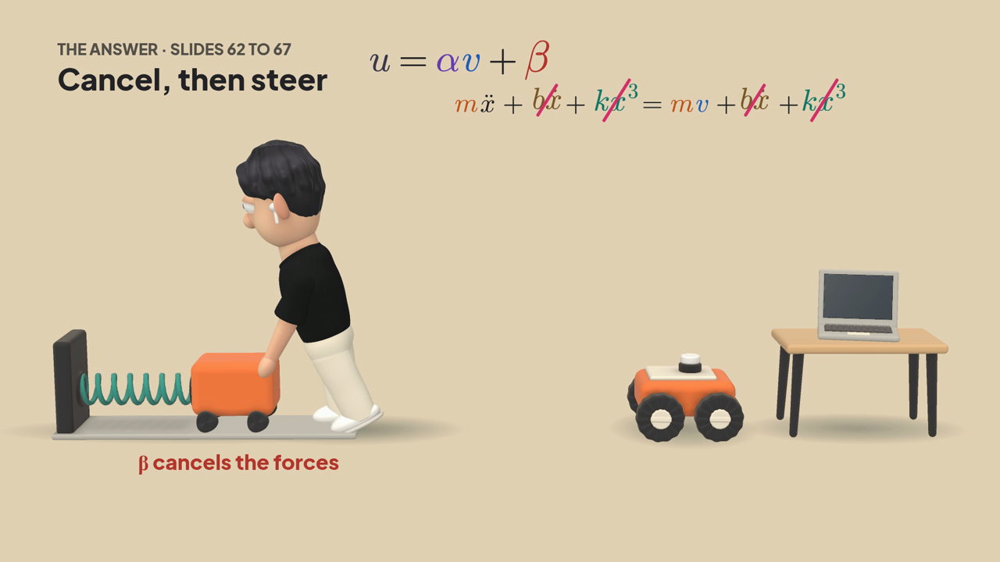

Teaching videos, made of clay and code.
Move the pointer over the clay.Scroll down.
It starts with one sentence.
> Make a video on why computed torque control works
Select the topic to change it.
Claude writes three files.
Put the pointer on a page to read it.An agent checks every fact.
Whisper times every word.
Turn the sound on, then move along the wave to hear each word.Turn the sound on to hear the voice.
Code draws every frame.
Drag to turn the camera.Scroll back, and it plays backwards.

Nothing renders until the checks pass.
Move the pointer: his hand follows it, and the engine's real hold check runs.Scroll, and his hand moves onto the cart.

The result is a real MP4.
Put the pointer on a frame to play it.Frames from six finished videos.

Install it with one command.
npx clayducationThen ask Claude Code for a video, in the conversation where the topic came up.